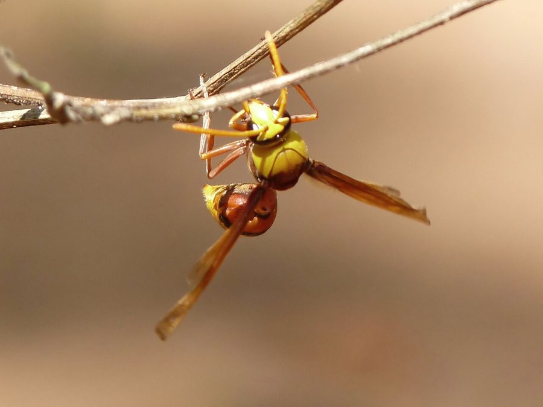

पेयर-शेप्ड पॉटर ततैयाPear-shaped Potter Wasp
Delta pyriforme · Vespidae · INS-0179

- Scientific name वैज्ञानिक नाम
- Delta pyriforme (Fabricius, 1775)
- Family कुल
- Vespidae
- Hindi हिंदी
- पेयर-शेप्ड पॉटर ततैया
- Local names स्थानीय नाम
- pear-shaped potter wasp, pear shaped potter wasp, wasp
- Status here यहाँ की स्थिति
- native
- Movement आवागमन
- Resident, here all year
- Known from कहाँ दर्ज
- Others have published records from the wider Awadh–Purvanchal plain, none yet from Basti–Ayodhya अवध–पूर्वांचल से दूसरों के प्रकाशित अभिलेख, बस्ती–अयोध्या से अभी नहीं
- IUCN IUCN
- not evaluated
- Review समीक्षा
- audited and independently read
When to look कब देखें
Present all year. साल भर मौजूद।
Uses and possibilities उपयोग और संभावनाएँ
Drawn from the documented uses in the profile below, where each is labelled traditional, current or a research lead. All uses →
पेयर-शेप्ड पॉटर ततैया / Pear-shaped Potter Wasp
Delta pyriforme (Fabricius, 1775) — Vespidae
पेयर-शेप्ड पॉटर ततैया — छोटी, पीली-काली ततैया जो मिट्टी से घड़ियाँ बनाती है। ये मिट्टी की छोटी घड़ियाँ दीवारों, घर की दीवारों, छतों पर दिखाई देती हैं। हर घड़ी में एक लार्वा रहता है। ये अकेले रहने वाली ततैई हैं, झुंड में नहीं। इसका दंश हल्का होता है। पूरे भारत में पाई जाती है।
Quick Identification त्वरित पहचान
| Feature | Description |
|---|---|
| Size | Worker 8–11 mm; female 10–13 mm |
| Colour | Black with yellow bands or spots; yellow markings on legs |
| Body | Slender, more delicate than hornets |
| Wings | Clear, held parallel to body at rest |
| Nests | Distinctive mud pots, 1–2 cm long, pear-shaped |
| Behaviour | Solitary (not colonial); non-aggressive |
| Sting | Present but not often used defensively |
Field tip: Look for small mud pots attached to walls, under eaves, on tree branches, or inside buildings. The pots are pear- or jug-shaped, about 1–2 cm long, and made entirely from mud collected by the wasp. The wasp is small, slender, and non-aggressive. Unlike hornets, it does not defend the nest. The presence of a hole in a pot indicates that the adult has already emerged.
हिंदी — कैसे पहचानें: घर की दीवार पर छोटी-सी मिट्टी की घड़ी दिखेगी। पीली-काली छोटी ततैया। बहुत कोमल, डंक भी कम मारती है।
Morphology आकारिकी
Biometrics:
| Measurement | Range |
|---|---|
| Female body length | 10–13 mm |
| Male body length | 8–11 mm |
| Wingspan | 20–27 mm |
| Mud pot length | 10–20 mm |
Female: Slender wasp, smaller than hornets. Head is largely black with yellow clypeus. Thorax is mostly black with some yellow markings. Abdomen is banded with black and yellow. Legs are predominantly yellow. Wings are transparent. Mandibles are strong, used for collecting and shaping mud.
Male: Similar in colour to females but slightly smaller.
Mud pot (nest): Constructed entirely from mud collected from the environment. The pot is flask- or pear-shaped, about 10–20 mm long, with a narrow neck. The female stocks each pot with paralysed caterpillars and lays a single egg inside before sealing it with mud.
Behaviour & Ecology व्यवहार और पारिस्थितيكि
A solitary wasp found in tropical and subtropical Asia. Unlike hornets and other social wasps, each female works alone to construct nests, gather prey, and lay eggs. There are no workers or colonies. Females search for suitable mud sources (puddles, stream banks, damp soil) and collect mud in their mandibles. They fly to their nesting site and construct a pot, working over several days.
Once a pot is built, the female hunts caterpillars, stinging them to paralysis but not death. She deposits a caterpillar in the pot and then lays a single egg. The caterpillar serves as living food for the developing larva. The female then seals the pot with a plug of mud.
Development time is dependent on temperature. In warm season, a new pot may be completed every few days. A single female may construct 10–30 pots over the season. Males are produced in autumn and mate with females before dying. Females survive the winter in sheltered crevices, ready to reproduce in spring.
The species is non-aggressive. Unlike hornets and paper wasps, it does not defend its nest or the area around it. The presence of the mud pots indicates that the wasp is actively hunting caterpillars in the vicinity.
हिंदी: अकेली रहती है। झुंड में नहीं। दीवार पर घड़ी बना के अंदर गिलहरी (केटरपिलर) डाल के अंडा देती है। बहुत शांत होती है, पर घड़ी को छेड़ो मत।
Life Cycle / Phenology जीवन चक्र
| Stage | Duration |
|---|---|
| Egg | 2–3 days |
| Larva | 6–10 days |
| Pupa | 8–15 days |
| Adult (summer) | 4–6 weeks |
| Adult (winter) | 6–8 months (dormant) |
| Egg-to-adult | 16–28 days under warm conditions |
Annual cycle:
- Spring (April–May): Overwintered females emerge and begin nest construction
- Summer (June–August): Peak pot construction and prey capture; rapid reproduction
- Autumn (September–October): Males are produced and mate with females
- Winter (November–March): Females enter dormancy in protected crevices
Host Plants or Prey आहार
Prey (larvae only):
- Caterpillars of various families: Noctuidae (owlet moths), Gracillariidae, and others
- Small caterpillars: 3–8 mm length
Adult food:
- Nectar and plant juices
- Flower pollen
- Honeydew
Feeding: Females hunt caterpillars and paralyse them with a sting. The caterpillar is then transported to the pot and left alive to serve as food for the larva. Adults feed on nectar and pollen, particularly from small flowers.
Predators / Natural Enemies शत्रु
- Parasitoid wasps: Parasitoid wasps lay eggs in pots, developing inside alongside the host larva
- Cuckoo wasps: Lay eggs in unguarded pots, allowing their larvae to consume the host larva
- Spiders: May capture adults on flowers
- Ants: May enter unsealed pots and consume contents
Agricultural / Human Relevance कृषि प्रासंगिकता
Beneficial predator. The Pear-shaped Potter Wasp is an important predator of caterpillars, many of which are agricultural pests. A single female may paralyse hundreds of caterpillars over a season, providing valuable pest control in gardens and cultivated areas. The species is non-aggressive and poses no stinging hazard to people.
Not a pest. Unlike hornets and paper wasps, this species is entirely beneficial. It does not cause damage to buildings; the small mud pots are minor cosmetic defects. The species is often considered desirable in gardens and should be left undisturbed.
Nest preservation: If a muddy pot is found on a building, it can be left in place. The wasp will not cause harm, and the mud pot will be abandoned once the adult emerges. New construction by the species occurs only when suitable mud is nearby and warm weather permits.
हिंदी: यह ततैया अच्छी है! गिलहरियों को खाती है, जिससे पेड़ों और फसलों को नुकसान नहीं होता। इसे मारो मत, छोड़ दो। इसका दंश इतना हल्का है कि कोई खतरा नहीं।
Expected Locally स्थानीय रूप से अपेक्षित
Not a field record. Written from published accounts for eastern Uttar Pradesh. No confirmed local sighting yet — if you have seen it, that is what the atlas needs.
अभी तक स्थानीय पुष्टि नहीं। यह विवरण प्रकाशित स्रोतों से है, किसी अवलोकन से नहीं।
Expected on walls, eaves, and trees throughout Basti district and eastern UP from April to September. The presence of mud pots indicates active nesting. A specimen collected from a mud pot or photographed with date and location would confirm a local record.
Distribution वितरण
Global range: Native to Asia, Africa, and Europe. Now found in tropical and subtropical regions worldwide, likely dispersed via human trade.
In India: Widespread in all states and districts.
In Uttar Pradesh: Common throughout; particularly abundant in the eastern plains.
In Basti district / eastern UP: Expected on buildings and in gardens throughout the year, most active April to September.
Research Questions शोध प्रश्न
- What caterpillar families are preferred by this wasp, and does prey preference vary by region or season? / यह ततैया कौन-सी गिलहरी (केटरपिलर) को ज़्यादा पसंद करती है? — Examine contents of sealed pots; identify prey species; quantify preferences.
- How many mud pots can a single female construct in a season, and what is the success rate of brood development? — Mark and monitor nests; measure productivity.
- Can this species be encouraged to nest in gardens by providing artificial nest structures? — Construct and deploy nest boxes; monitor colonisation.
- What is the predatory efficiency of this species on crop pest caterpillars compared to other natural enemies? — Field trials; measure pest reduction.
- How does parasitism by cuckoo wasps affect the success of Delta pyriforme reproduction? — Monitor pot contents; quantify parasitism rates.
Similar Species मिलती-जुलती प्रजातियाँ
| Species | How to tell apart | हिंदी |
|---|---|---|
| Other Delta spp. | Similar; microscopic examination of wing venation required for identification | अलग Delta जाति |
| Paper wasps (Polistes) | Larger, colonial, umbrella-shaped nest, more aggressive | बड़ी, झुंड में, अलग घोंसली |
| Hornets | Much larger, more robust, colonial nests, aggressive | बहुत बड़ी, झुंड में |
Field rule: Small (10–13 mm), slender yellow-and-black wasp with distinctive mud pots (pear-shaped, 1–2 cm) on walls or under eaves, non-aggressive: Pear-shaped Potter Wasp.
Taxonomy & Classification वर्गीकरण
Original description. Described by Fabricius in 1775 as Vespa pyriforme based on specimens from India.
Subspecies. Monotypic; no subspecies are recognised.
Family and order placement. Order Hymenoptera, family Vespidae (wasps, hornets). The genus Delta contains potter wasps, all of which construct mud nests.
Phylogenetic notes. The genus Delta comprises about six recognised species, all solitary and mud-nesting. D. pyriforme is the most widespread and common Asian species.
IUCN status rationale. Not evaluated. A beneficial native species not under conservation consideration.
Photo Gallery फोटो गैलरी
Photos needed आवश्यक फोटो
- [ ] Mud pot on a wall or building (मिट्टी की घड़ी)
- [ ] Adult wasp (ततैया)
- [ ] Opened pot showing caterpillar or larval chamber (घड़ी खोलने पर)
No photos yet — add field photos to media/species/pear_shaped_potter_wasp/ and run node scripts/sync_photos.js.
References संदर्भ
- Fabricius, J.C. (1775). Systema Entomologiae. Flensburgi et Lipsiae.
- Bohart, R.M. & Menke, A.S. (1976). Sphecid Wasps of the World. University of California Press, Berkeley.
- Carpenter, J.M. (1988). The phylogenetic system of the Vespoidea (Hymenoptera). Systematic Entomology 13: 229–250.
- Jayanthi, P.D.K. & David, B.V. (1995). An account of Vespidae (Hymenoptera) of Tamil Nadu. Entomology Reporter 17(1): 25–32.
- Turillazzi, S. & Pardi, L. (1981). Behavioural interactions in the pre-nesting period of Parischnogaster nigricans serrei (du Buysson) (Hymenoptera Stenogastrinae). Bollettino della Societa Entomologica Italiana 113: 140–147.
- GBIF Occurrence Data — Delta pyriforme, Asia (2024).
Source file: species/fauna/insects/pear_shaped_potter_wasp.md